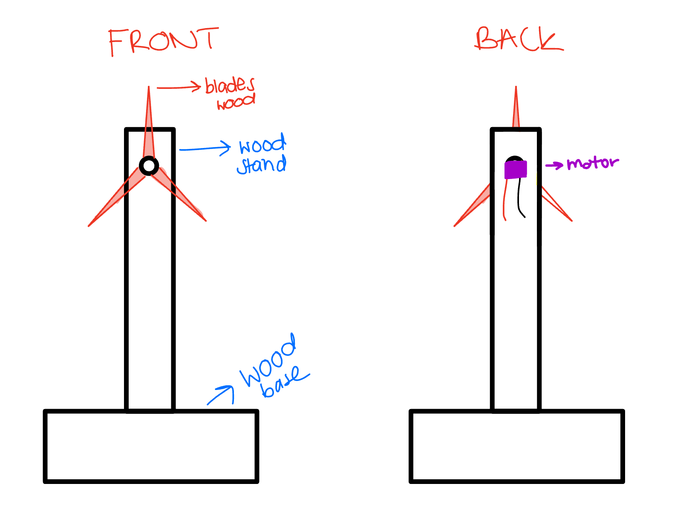
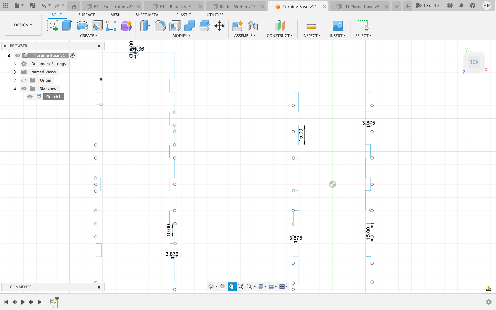
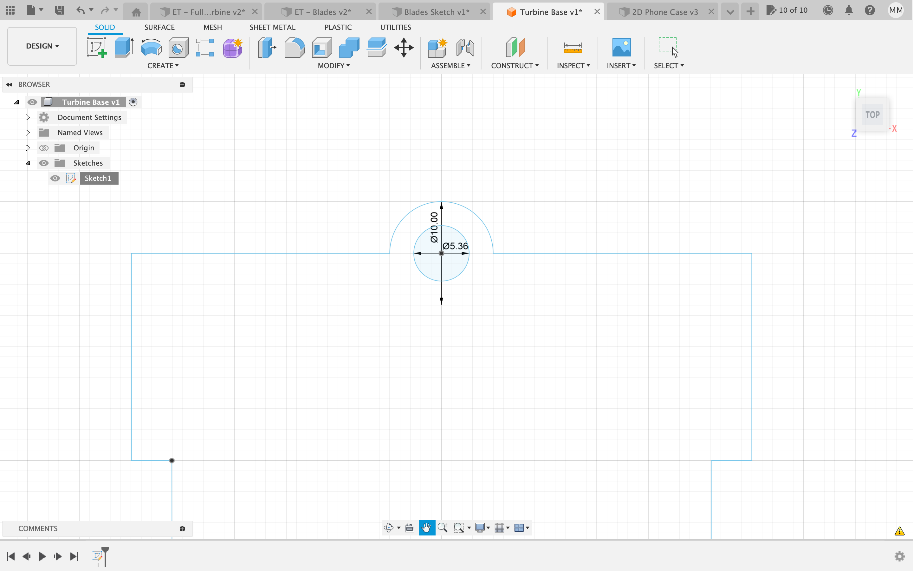
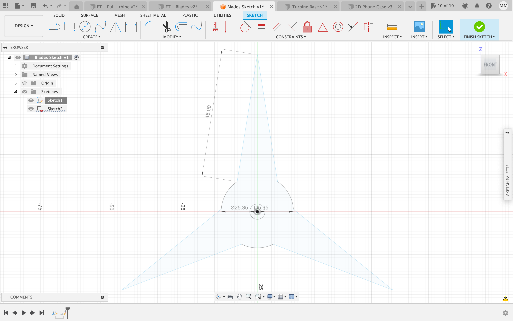
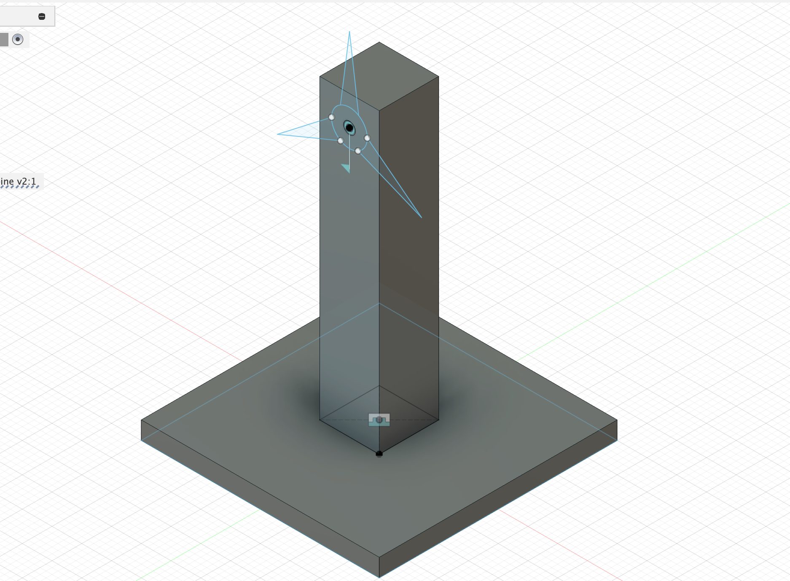
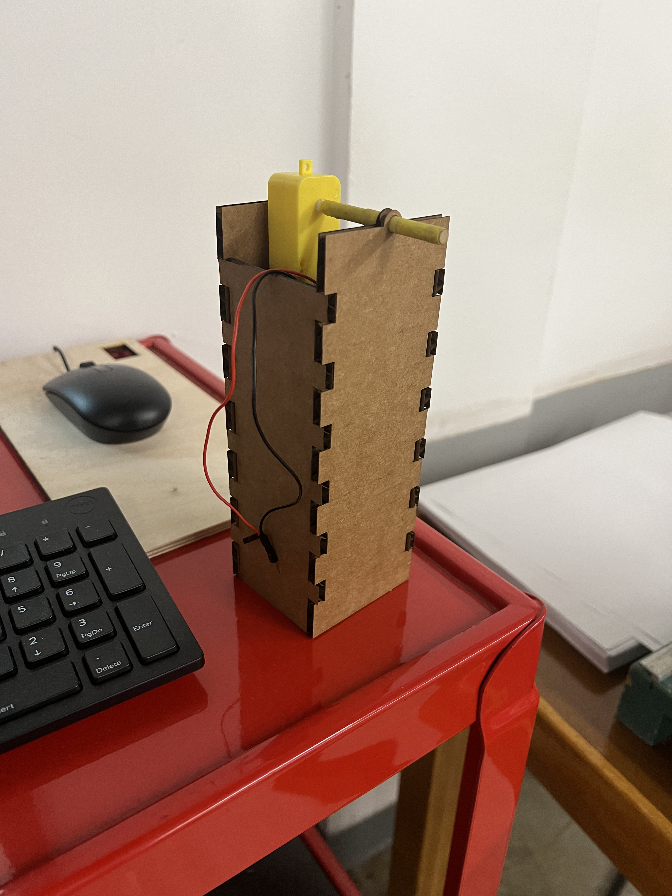
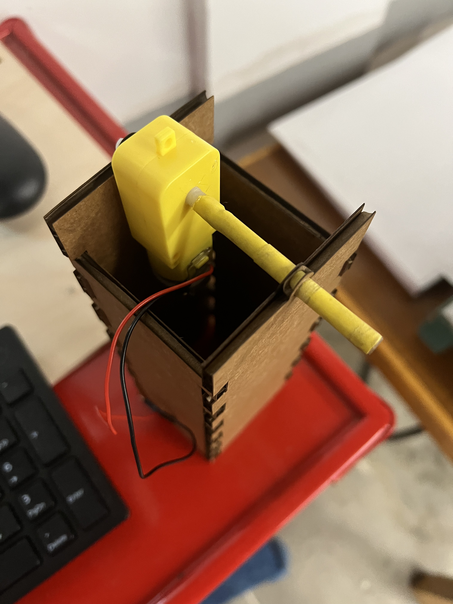
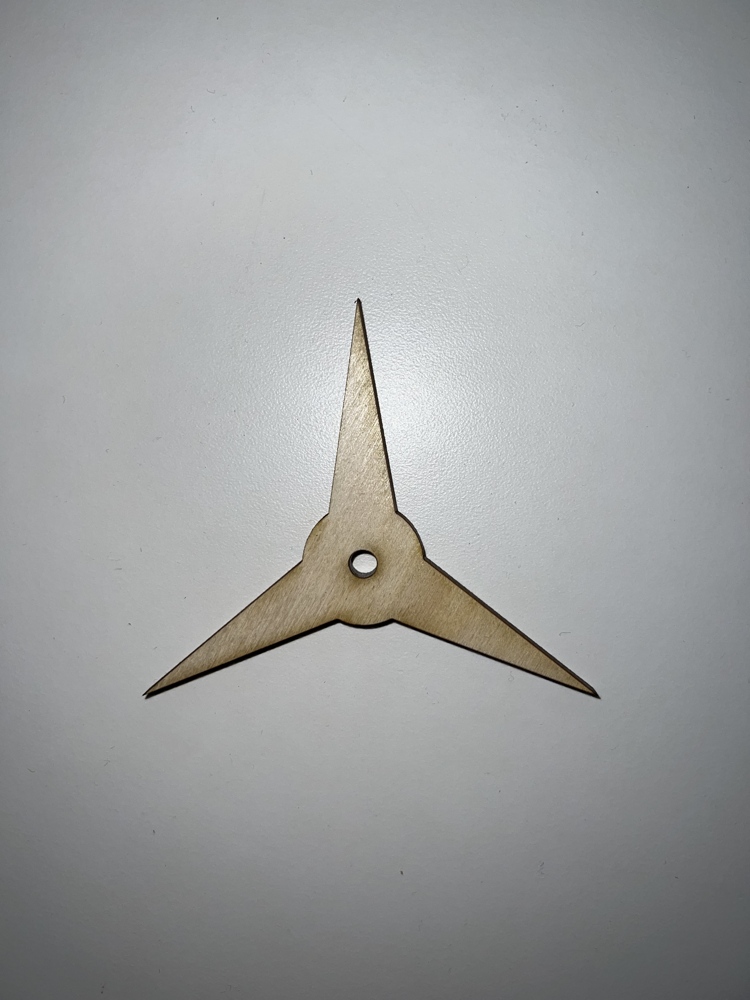
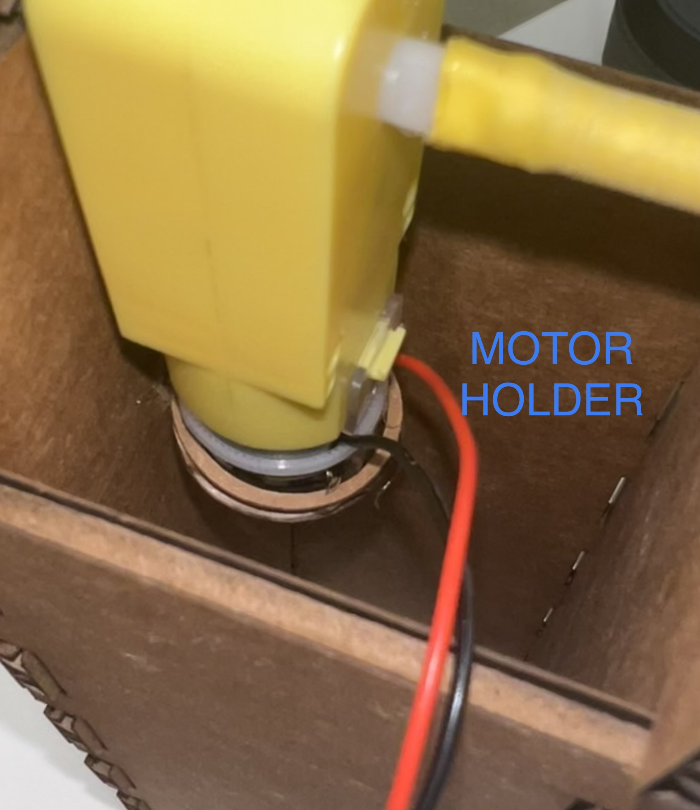
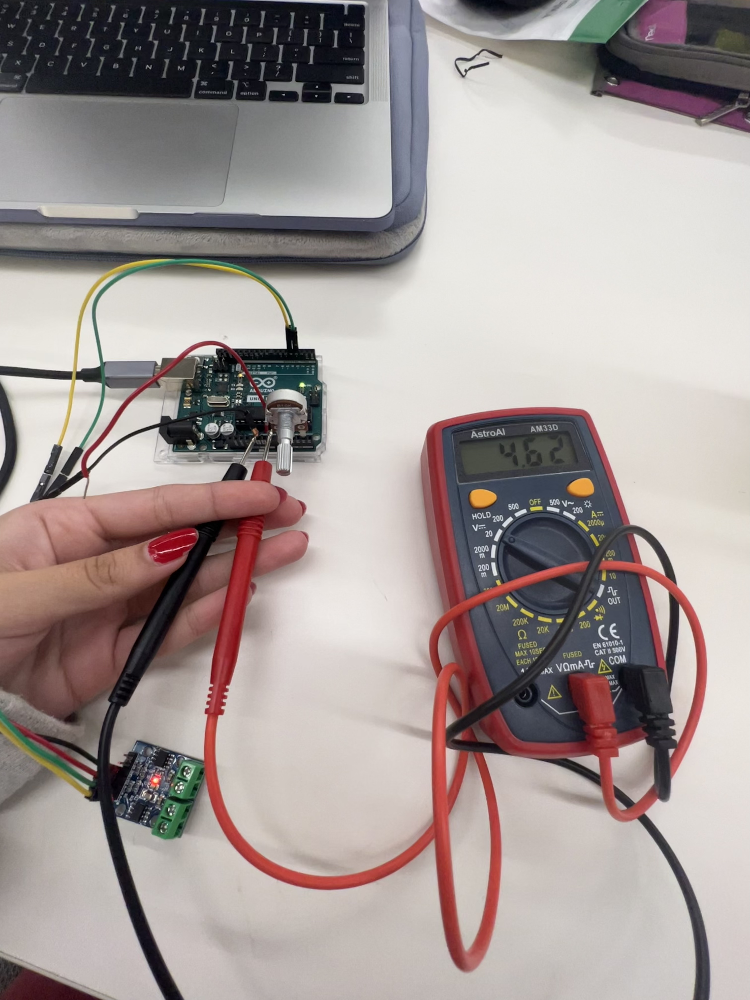

<br>
### Week 3: Electronics and Tools
<p>This week we learned about Electronics and Tools, specifically power/motors, soldering, saws, and drills. My assignment was make a kinetic sculpture. Because of the heat we have been experincing in this past few days, I thought of making a turbine/fan.</p>
<br>
##### <strong>Kinetic Sculpture: Turbine/Fan</strong>
<br>
<strong>The Sketches/Idea</strong>
<p>The first step of this process was really to design and model what the Turbine would look like. I first did this on my iPad (Image 1) and later on Fuison 360. I designed the pieces separately, the base/tower (Image 2) and the then the blades (Image 4). The base featured two hotes at the top. The front hole would be for the blades and the back would be for the other leg from the motor (Image 3). Using the joint function I was able to add the two components together and really see what the turbine would look like (Image 5).
<br>
<div class="slideshow-container">
<div class="mySlides fade">
<div class="numbertext">1 / 5</div>
<center></center>
<div class="text">Turbine iPad Sketch</div>
</div>
<div class="mySlides fade">
<div class="numbertext">2 / 5</div>
<center></center>
<div class="text">Turbine Base</div>
</div>
<div class="mySlides fade">
<div class="numbertext">3 / 5</div>
<center></center>
<div class="text">Turbine Base (Motor Location)</div>
</div>
<div class="mySlides fade">
<div class="numbertext">4 / 5/</div>
<center></center>
<div class="text">Turbine Blades</div>
</div>
<div class="mySlides fade">
<div class="numbertext">5 / 5</div>
<center></center>
<div class="text">Turbine Idea (Fusion 360 Design)</div>
</div>
<!-- Next and previous buttons -->
<a class="prev" onclick="plusSlides(-1)">&#10094;</a>
<a class="next" onclick="plusSlides(1)">&#10095;</a>
</div>
<br>
<div style="text-align:center">
<span class="dot" onclick="currentSlide(1)"></span>
<span class="dot" onclick="currentSlide(2)"></span>
<span class="dot" onclick="currentSlide(3)"></span>
<span class="dot" onclick="currentSlide(4)"></span>
<span class="dot" onclick="currentSlide(5)"></span>
</div>
<br>
<strong>The Building Process</strong>
<p>After using Fusion360 to sketch the turbine, I began to build it. The base was pressfit, so trying to get the base to stand and maintain the motor took multiple trials. However, by the fourth laser cutting, the base was stable.</p>
<center></center>
<br>
<p>I also altered the motor by extending the leg of the motor by hot gluing wood and securing it with heat shrink. This made the leg significantly longer and much easier to work with.</p>
<center></center>
<br>
<p>While, the base was cardboard, I decided to make the blades wood. The blades were also laser cut and only took one trial. Eventually, I put the base, the motor, and the blades together</p>
<center></center>
<br>
<p>White it was functional and the blades still moved freely, the motor would hit the sides of the base causing the base to fall apart. In order to fix this I designed a sort of "cup holder", but for the motor. I measured the motor and how far apart it was from the back wall, used the laser cutter to make the shape, cut a hole through the back wall, and was then able to attach the holder. After the holder was established, the motor no longer hit the walls and was stable whithout having movement restricted.</p>
<center></center>
<br>
<p>Finally the last step I encountered was simply just design and aesthetics. At this point the design had no type of "roof", so the top of the motor was really just sticking out. To fix this, I added a sort of wall and then an A-Frame Roof shape. Finally, I covered the heatshrink and wood from the motor/blades order with red clay.</p>
<center><video width="250" height="400" controls>
<source src="turbineworking.mp4" type="video/mp4"></video></center>
<p> Overall, the most challenging part of the week was really just figuring out the most effective design and the best way to add the blades, motor, and base together efficiently</p>
<br>
##### <strong>The Multimeter & Ohm's Law</strong>
<p> Another part of our assignment this week was to use a multimeter to measure the volts in our circuits and Ohm's law to calculate current through the circuit.
<br>
<center></center>
<br>
<p>Unfortunately, no resisters were used in my circuitry, so I when it came to using Ohms law and finding the current, I got <br> that I (the current) = 4.62 (volts) / 0 (resistance).</p>
[Home](../index.html).